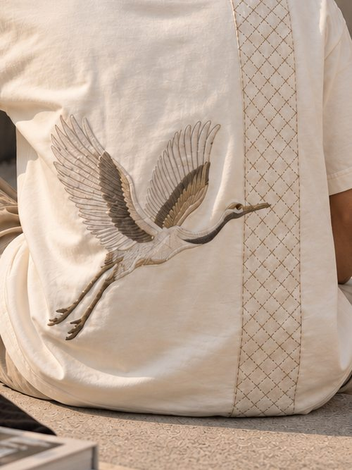
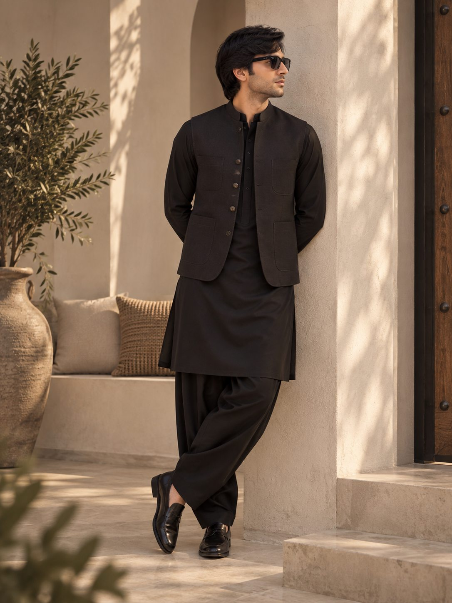

Tradition in a modern form.
A men's wear house for people who want their clothes to mean something, and to be easy to wear on an ordinary day.

Rooted in culture, worn for today
Nure Asmir began with a simple observation: the best clothes in a wardrobe are the ones that carry a story and still feel effortless. Paisley from heirloom shawls. Running stitches that outlast a trend. A camp collar cut for warm evenings.
We keep the technique and change the shape. Silhouettes are relaxed, colours are drawn from stone, timber, olive leaf and brass, and every detail is finished by hand before it leaves the atelier.
Explore the collection
Three quiet principles
Clean lines, relaxed proportions and colour you can wear with anything already in your wardrobe.
Embroidery, block print and patchwork, drawn from traditions worth carrying forward.
Clothes that do the talking quietly. Nothing loud, nothing that needs explaining.
A room made for trying on
Our storefront is a quiet room of limestone, dark timber and warm light. Jackets hang at eye level, leather sits on brass, and a tailor is always close by.
Shalwar kameez and waistcoats can be made to your measurements. Come in, take your time, and leave with something that fits.
Book a visit